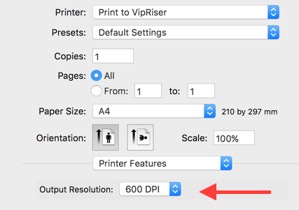

VipRiser Support
NOTE: You may also want to check general support and ‘why doesn’t my app open’ page .
Version for older Mac OS
If your Mac OS version is no longer support, you can get version 2.1.
The VipRiser printer stays in the ‘paused’ state
Make sure the VipRiser.app is running while you print.
When printing without VipRiser app already running, the app starts up but crashes or produces unexpected result
Make sure there is only one VipRiser.app on your system. The printer driver will launch the first app it will find, which may be the wrong version.
How do I uninstall it
Execute the uninstall script from the VipRiser menu.
The VipRiser doesn’t show up even after I install the driver
You can add it in the Terminal:
lpadmin -E -D "Print to VipRiser" -p "Print_to_VipRiser" -v "vipriser:/" -P /Library/Printers/PPDs/Contents/Resources/vipriser.ppd -o printer-is-shared=false
cupsenable "Print_to_VipRiser"
cupsaccept “Print_to_VipRiser"
Change default image resolution from 72PDI

This is application specific setting and may be configured in ‘Printer Features’ section. If you really need to change it for all application, you can always edit the the PPD file manually /Library/Printers/PPDs/Contents/Resources/vipriser.ppd Turn off image compression in ‘Folder’ section of VipRiser’s configuration. This is needed only if you print to folder.
Using custom PPD
You can specify custom PPD when you install the VipRiser printer in the ‘Printer & Scanner’ system preferences.
Eliminate the numerical prefix
Either change the configuration in ‘Preferences Panel’ under the ‘…’ tab or create a custom step that saves the PDF under name of your choosing.